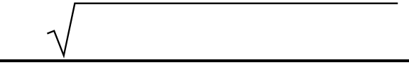

Manure Module Storage 2022 R1
1. Model Structurea. Manure collection from pensb. Manure handlersc. Storage/treatmentd. Output2. CalibrationTBC3. Manure Generation and HandlingContains equations from:
●
●
●
|
Storage/treatment
|
|
|---|---|---|
○ |
Slurry storage - Underfloor and Outside |
|
○ |
Anaerobic Digestion |
|
○ |
Lagoon system |
A. Pens𝑇𝐴 = 𝐴𝑁𝑀𝐴 + 𝐴𝑁𝑀𝐵 + 𝐴𝑁𝑀𝐶 [MS.3.A.1]TA = Total AnimalsANMi = Animal of type i
𝐶
𝑅𝑀 = |
∑ 𝐴𝑁𝑀𝑖 * 𝑀𝑁𝑅𝑖 𝑖=𝐴 |
[MS.3.A.2] |
|---|---|---|
RM = Raw ManureMNRi = Manure generated by each animal of type i
𝐶
𝑇𝑆𝑒𝑥𝑐𝑟𝑒𝑡𝑒𝑑 = |
∑ 𝐴𝑁𝑀𝑖 * 𝑆𝑖 𝑖=𝐴 |
[MS.3.A.3] |
|---|---|---|
TSexcreted = Total Solids ExcretedSi = Solids excreted by each animal of type i1
Manure Module
𝐶
𝑉𝑆𝑒𝑥𝑐𝑟𝑒𝑡𝑒𝑑 = |
∑ 𝐴𝑁𝑀𝑖 * 𝑉𝑆𝑖 𝑖=𝐴 |
[MS.3.A.4] |
|---|---|---|
VSexcreted = Volatile Solids ExcretedVSi = Volatile Solids excreted by each animal of type iNutrients : Nutrient = [N, TAN, P2O5, K2O]𝐶
𝑁𝑢𝑡𝑟𝑖𝑒𝑛𝑡𝑒𝑥𝑐𝑟𝑒𝑡𝑒𝑑 = |
∑ 𝐴𝑁𝑀𝑖 * 𝑁𝑢𝑡𝑟𝑖𝑒𝑛𝑡𝑖 𝑖=𝐴 |
|---|---|
[MS.3.A.5]
Nutrientexcreted = Nutrient ExcretedNutrienti = Nutrient excreted by each animal of type i
𝐶
𝑇𝐴𝑁 |
𝑒𝑥𝑐𝑟𝑒𝑡𝑒𝑑 = |
∑ 𝐴𝑁𝑀𝑖 * 𝑇𝐴𝑁 𝑖=𝐴 |
𝑖 |
MS.3.A.6]** |
|---|---|---|---|---|
TANexcreted = TAN ExcretedTANi = TAN excreted by each animal of type i
𝐶
𝑃2𝑂5 |
𝑒𝑥𝑐𝑟𝑒𝑡𝑒𝑑 = |
∑ 𝐴𝑁𝑀𝑖 * 𝑃2𝑂5 𝑖=𝐴 |
𝑖 |
MS.3.A.7]** |
|---|---|---|---|---|
P2O5 excreted = P2O5 ExcretedP2O5 i = P2O5 excreted by each animal of type i
𝐶
𝐾2𝑂 |
𝑒𝑥𝑐𝑟𝑒𝑡𝑒𝑑 = |
∑ 𝐴𝑁𝑀𝑖 * 𝐾2𝑂 𝑖=𝐴 |
𝑖 |
MS.3.A.8]** |
|---|---|---|---|---|
K2O excreted = K2O ExcretedVSi = Volatile Solids excreted by each animal of type iI. Milking Center & Holding Pen
Cleaning Method is always flushing
𝐹𝑊 = 𝑊𝑉𝑓𝑙𝑢𝑠ℎ𝑖𝑛𝑔 * 𝑇𝐴 [MS.3.A.I.1]
FW = Fresh water volume
WVflushing = Volume of water used in flushing per animal
Manure Generated
2
Manure Module
𝑇𝑊𝑉𝑚𝑙𝑘 = |
𝑅𝑀
ρ𝑚𝑎𝑢𝑟𝑒* τ𝑚𝑙𝑘*
𝐹𝑊
|
[MS.3.A.I.2] |
|---|---|---|
TWVmlk = Total waste volume received in milking & holding center ϱ𝑚𝑎𝑛𝑢𝑟𝑒 = Density of manureτ𝑚𝑙𝑘 = Percentage daily time spent and milking & holding center FW is in m3𝑇𝑆𝑚𝑙𝑘 = 𝑇𝑆𝑒𝑥𝑐𝑟𝑒𝑡𝑒𝑑 * τ𝑚𝑙𝑘 [MS.3.A.I.3] TSmlk = Total solids from milking and holding center
𝑉𝑆𝑚𝑙𝑘 = 𝑉𝑆𝑒𝑥𝑐𝑟𝑒𝑡𝑒𝑑 * τ𝑚𝑙𝑘 [MS.3.A.I.4] VSmlk = Volatile solids from milking and holding center
𝑁𝑢𝑡𝑟𝑖𝑒𝑛𝑡 |
𝑚𝑙𝑘 = 𝑁𝑢𝑡𝑟𝑖𝑒𝑛𝑡 |
𝑒𝑥𝑐𝑟𝑒𝑡𝑒𝑑* τ𝑚𝑙𝑘 |
[MS.3.A.I.5]* |
|---|---|---|---|
Nutrientmlk = Nutrient from milking and holding center
II. |
Cleaning = Flushing Scrape - FreeStall/TieStall |
|---|---|
Flushing system
𝐹𝑊𝑉 = 𝑊𝑉𝑓𝑙𝑢𝑠ℎ𝑖𝑛𝑔 * 𝑇𝐴 [MS.3.A.II.1] FWV = Flush water volumeWVflushing = Volume of water used in flushing per animal
Scrape system
𝑆𝑊𝑉 = 𝑊𝑉𝑆𝑐𝑟𝑎𝑝𝑒 * 𝑇𝐴 [MS.3.A.II.2] SWV = Scrape water volumeWVflushing = Volume of water used in scraping per animal3
Manure Module
III. |
𝐵𝑒𝑑𝑑𝑖𝑛𝑔 = 𝑆𝐵 | 𝑂𝐵 |
FreeStall/TieStall** |
|---|---|---|
SB = Sand BeddingSD = SawdustMS = Manure solidsBedding can be any of the above, not combinations inany of the given pens.bedding_mass_per_day: Amount of bedding needed for each animal per day, kg/animal/day.
bedding_density: Density of the bedding, kg/m^3.
bedding_dry_matter_content: Dry matter content of the bedding, [0.7 - 1.0].
bedding_cleaned_fraction: Fraction of bedding removed from the barn [0.7 - 1.0].
bedding_type: Type of bedding.
𝐵𝐷𝑀𝑃𝐷 = 𝐵𝐷𝑀𝑃𝐷𝐴 * 𝑇𝐴 [MS.3.A.III.1]
BDMPD = Bedding mass per day (depends on selected bedding), KgBDMPDA = Bedding mass per day per animal, kg
𝐵𝐷𝑀𝑃𝐷 |
||
|---|---|---|
𝐵𝐷𝑉𝑃𝐷 = |
ρ𝑏𝑒𝑑𝑑𝑖𝑛𝑔 |
[MS.3.A.III.2] |
BDVPD = Bedding Volume per day, m^3ϱ𝑏𝑒𝑑𝑑𝑖𝑛𝑔 = Density of selected bedding
𝐶𝐿𝑀 = 𝐹𝐿𝑆𝐻 | 𝑆𝐶𝑅𝑃
CLM = Cleaning methodFLSH = Flushing4
Manure Module
SCRP = ScrapingCleaning method can either be flushing or scraping𝑅𝐹𝑊 = 𝐶𝐿𝑀𝑣𝑜𝑙𝑢𝑚𝑒 * 𝑇𝐴 [MS.3.A.III.3]
RFW = Total Volume of water from cleaningCLMvolume = Volume of water per animal used for selected cleaning methodIV. Sand SeparationSand lane | Mechanical Separators (Used if and only if the bedding used is SB)Sand lane𝑆𝐷𝑀𝑠𝑒𝑝 = 𝐵𝐷𝑀𝑃𝐷 * ϵ𝑠𝑎𝑛𝑑−𝑠𝑒𝑝 [MS.3.A.IV.1]SDMsep = Mass of sand separated (per day)ϵ𝑠𝑎𝑛𝑑−𝑠𝑒𝑝 = Sand separation efficiency
𝐵𝐷𝑀𝑃𝐷 − 𝑆𝐷𝑀𝑠𝑒𝑝 |
|||
|---|---|---|---|
𝑆𝐷𝑉 |
𝑟𝑒𝑚 = |
ρ𝑏𝑒𝑑𝑑𝑖𝑛𝑔 |
** [MS.3.A.IV.2]** |
SDVrem = Volume of sand remaining after separation (per day)
V. |
|
||
|---|---|---|---|
𝑇𝑆𝑟𝑓𝑤 = |
𝑅𝐹𝑊*ε𝑇𝑆−𝑟𝑓𝑤 |
[MS.3.A.V.1]* |
|
1000 |
|||
𝑇𝑆𝑟𝑓𝑤 = Total Solids contribution from cleaning |
ε𝑇𝑆−𝑟𝑓𝑤 = Proportion of RFW corresponding to Total solids
𝑅𝐹𝑊*ε𝑉𝑆−𝑟𝑓𝑤 |
||
|---|---|---|
𝑉𝑆 = |
1000 |
[MS.3.A.V.2] |
𝑉𝑆 = Volatile Solids contribution from cleaning |
ε𝑉𝑆−𝑟𝑓𝑤 = Proportion of RFW corresponding to Volatile solids
5
Manure Module
𝑅𝐹𝑊*ε𝑁𝑢𝑡𝑟𝑖𝑒𝑛𝑡−𝑟𝑓𝑤 |
||
|---|---|---|
𝑁𝑢𝑡𝑟𝑖𝑒𝑛𝑡 |
𝑟𝑓𝑤= |
1000 |
[MS.3.A.V.3]
𝑁𝑢𝑡𝑟𝑖𝑒𝑛𝑡 |
𝑟𝑓𝑤=𝑁𝑢𝑡𝑟𝑖𝑒𝑛𝑡 |
contribution from cleaning |
|
|---|---|---|---|
ε𝑁𝑢𝑡𝑟𝑖𝑒𝑛𝑡−𝑟𝑓𝑤 = Proportion of RFW corresponding to |
𝑁𝑢𝑡𝑟𝑖𝑒𝑛𝑡 |
TOTAL MANURE GENERATED (FROM PENS)
𝑇𝑊𝑉ℎ𝑠𝑒 = ( |
𝑅𝑀
ρ𝑚𝑎𝑛𝑢𝑟𝑒* τ𝑓𝑟𝑠𝑡𝑎𝑙𝑙) + 𝑅𝐹𝑊 +
𝑇𝑊𝑉𝑚𝑙𝑘+ 𝑆𝐷𝑉𝑟𝑒𝑚
|
|---|---|
[MS.3.A.9]
TWVhse = Total waste volume generated from housing (both
freestall and milking/holding centres)
τ𝑓𝑟𝑠𝑡𝑎𝑙𝑙 = Percent daily time spent in freestall/tiestall
All volumes in m3.
𝑇𝑆𝑔𝑒𝑛 = 𝑇𝑆𝑒𝑥𝑐𝑟𝑒𝑡𝑒𝑑 * τ𝑓𝑟𝑠𝑡𝑎𝑙𝑙 + 𝑇𝑆𝑚𝑙𝑘 + 𝑇𝑆𝑟𝑓𝑤 [MS.3.A.10]
TSgen = Total solids generated
𝑉𝑆𝑔𝑒𝑛 = 𝑉𝑆𝑒𝑥𝑐𝑟𝑒𝑡𝑒𝑑 * τ𝑓𝑟𝑠𝑡𝑎𝑙𝑙 + 𝑇𝑉 + 𝑉𝑆𝑟𝑓𝑤 [MS.3.A.11]
𝑉𝑆𝑔𝑒𝑛 = Total Volatile Solids generated
𝑁𝑢𝑡𝑟𝑖𝑒𝑛𝑡𝑔𝑒𝑛 = 𝑁𝑢𝑡𝑟𝑖𝑒𝑛𝑡𝑒𝑥𝑐𝑟𝑒𝑡𝑒𝑑 * τ𝑓𝑟𝑠𝑡𝑎𝑙𝑙 + 𝑁𝑢𝑡𝑟𝑖𝑒𝑛𝑡𝑚𝑙𝑘 + 𝑁𝑢𝑡𝑟𝑖𝑒𝑛𝑡𝑟𝑓
[MS.3.A.12]
𝑁𝑢𝑡𝑟𝑖𝑒𝑛𝑡𝑔𝑒𝑛 = Total Nutrients generated
4. Storage
B. Slurry Storage (SS)
6
Manure Module
SS - Underfloor
𝑊𝑉𝑠𝑙𝑢𝑟𝑟𝑦 = 𝑊𝑊𝑉𝑠𝑙𝑢𝑟𝑟𝑦 − 𝐹𝑅𝑠𝑡𝑟𝑔 [MS.4.B.1]
𝑊𝑉𝑠𝑙𝑢𝑟𝑟𝑦 𝑠𝑡𝑟𝑔 = Waste Volume of Slurry storage (includes manure
and bedding)
𝑊𝑊𝑉𝑠𝑙𝑢𝑟𝑟𝑦 𝑠𝑡𝑟𝑔 = Waste Water Volume loaded into Slurry storage
used for cleaning
𝐹𝑅𝑠𝑙𝑢𝑟𝑟𝑦 𝑠𝑡𝑟𝑔 = Flushing Volume Recycled to Slurry storage
𝑇𝑉𝑠𝑡𝑟𝑔 = 𝑊𝑊𝑉𝑠𝑡𝑟𝑔 + 𝑊𝑉𝑠𝑡𝑟𝑔 * ℎ𝑟𝑡𝑠𝑡𝑟𝑔 [MS.4.B.2]
𝑇𝑉𝑠𝑡𝑟𝑔 = Total Volume of Slurry storage
ℎ𝑟𝑡𝑠𝑡𝑟𝑔 = Hydraulic Retention Time of Slurry storage, days
SS - Outdoor
𝑊𝑉𝑠𝑙𝑢𝑟𝑟𝑦 = 𝑊𝑊𝑉𝑠𝑙𝑢𝑟𝑟𝑦 − 𝐹𝑅𝑠𝑡𝑟𝑔 [MS.4.B.3]
𝑊𝑉𝑠𝑙𝑢𝑟𝑟𝑦 𝑠𝑡𝑟𝑔 = Waste Volume of Slurry storage (includes manure
and bedding)
𝑊𝑊𝑉𝑠𝑙𝑢𝑟𝑟𝑦 𝑠𝑡𝑟𝑔 = Waste Water Volume loaded into Slurry storage
used for cleaning
𝐹𝑅𝑠𝑙𝑢𝑟𝑟𝑦 𝑠𝑡𝑟𝑔 = |
Flushing Volume Recycled to Slurry storage |
|
|---|---|---|
𝑇𝑉𝑠𝑡𝑟𝑔 = 𝑊𝑊𝑉𝑠𝑡𝑟𝑔 + 𝑊𝑉𝑠𝑡𝑟𝑔 * ℎ𝑟𝑡𝑠𝑡𝑟𝑔 + 𝑅𝐹 + 𝐹𝐵 |
[MS.4.B.4] |
|
𝑇𝑉𝑠𝑡𝑟𝑔 = Total Volume of Slurry storage |
ℎ𝑟𝑡𝑠𝑡𝑟𝑔 = Hydraulic Retention Time of Slurry storage, days
𝑅𝐹 =
𝐹𝐵 =
|
Total Rainfall Volume added, m^3 Free Board volume, m^3 |
|---|---|
7
Manure Module
C. Anaerobic Digestion
𝑉𝑆𝑎𝑛𝑑𝑖𝑔−𝑙𝑑 |
|||
|---|---|---|---|
𝑆𝐴𝑉𝑎𝑛𝑑𝑖𝑔 = |
ρ𝑤𝑎𝑡𝑒𝑟 |
* δ𝑠𝑙𝑑 * τ𝑠𝑙𝑑 * 𝐷𝑦𝑟 |
[MS.4.C.1] |
𝑆𝐴𝑉𝑎𝑛𝑑𝑖𝑔 = Sludge accumulation volume of anaerobic digester |
𝑉𝑆𝑎𝑛𝑑𝑖𝑔−𝑙𝑑 = Volatile solids loaded (into Anaerobic Digester)
δ𝑠𝑙𝑑 = Sludge accumulation rate (in anaerobic digester)
τ𝑠𝑙𝑑 = Sludge accumulation period ( in anaerobic digester)
ρ𝑤𝑎𝑡𝑒𝑟 = Density of water (in kg/m3) |
[MS.4.C.2] |
|
|---|---|---|
𝐷𝑦𝑟 = Days in a year |
≈ 365 |
|
𝑀𝑉𝑇𝑎𝑛𝑑𝑖𝑔 = 𝑊𝑊𝑉𝑎𝑛𝑑𝑖𝑔 * ℎ𝑟𝑡𝑎𝑛𝑑𝑖𝑔 |
𝑀𝑉𝑇𝑎𝑛𝑑𝑖𝑔 = Minimum Volume Treatment (in anaerobic digester)
𝑊𝑊𝑉𝑎𝑛𝑑𝑖𝑔 = Waste water volume loaded into anaerobic digester
ℎ𝑟𝑡𝑎𝑛𝑑𝑖𝑔 = Hydraulic Retention Time anaerobic digester
𝑇𝐶𝑉𝑎𝑛𝑑𝑖𝑔 = ε𝑇𝐶𝑉 * 𝑀𝑉𝑇𝑎𝑛𝑑𝑖𝑔 [MS.4.C.3]
𝑇𝐶𝑉𝑎𝑛𝑑𝑖𝑔 = Top cover volume
ε𝑇𝐶𝑉 = Percentage of MVT corresponding to TCV
𝑉𝑎𝑛𝑑𝑖𝑔 = 𝑀𝑉𝑇𝑎𝑛𝑑𝑖𝑔 + 𝑇𝐶𝑉𝑎𝑛𝑑𝑖𝑔 + 𝑆𝐴𝑉𝑎𝑛𝑑𝑖𝑔 [MS.4.C.4]
𝑉𝑎𝑛𝑑𝑖𝑔 = Digester Volume of anaerobic lagoon
𝑉𝑆𝑎𝑛𝑑𝑖𝑔−𝑙𝑑 |
|
|---|---|
δ𝑣𝑠𝑙−𝑎𝑛𝑑𝑖𝑔 = |
𝑉𝑎𝑛𝑑𝑖𝑔 |
[MS.3.C.5]
δ𝑣𝑠𝑙−𝑎𝑛𝑑𝑖𝑔 = VS loading rate for andig
8
Manure Module
𝐵𝐺𝑔𝑒𝑛 = ε 𝑏𝑔𝑔𝑒𝑛 |
* 𝑉𝑆𝑎𝑛𝑑𝑖𝑔−𝑙𝑑 |
[MS.4.C.6] |
|---|---|---|
𝐵𝐺𝑔𝑒𝑛 = Biogas generated in anaerobic lagoon
ε𝑏𝑔𝑔𝑒𝑛 = Biogas generation rate (percentage)
𝐶𝐻4𝑔𝑒𝑛 = ϵ𝐶𝐻4𝑔𝑒𝑛 * 𝐵𝐺𝑔𝑒𝑛
[MS.4.C.7]
𝐶𝐻4𝑔𝑒𝑛 = Methane generated in anaerobic digester
ε𝐶𝐻4𝑔𝑒𝑛 = Methane generation rate (percentage)
EFFLUENT FROM ANAEROBIC DIGESTER
𝑊𝑊𝑉𝑒𝑓𝑓−𝑎𝑛𝑑𝑖𝑔 = 𝑊𝑊𝑉𝑎𝑛𝑑𝑖𝑔 [MS.4.C.8]
𝑊𝑊𝑉𝑒𝑓𝑓−𝑎𝑛𝑑𝑖𝑔 = Effluent Waste Volume
𝑇𝑆𝑒𝑓𝑓−𝑎𝑛𝑑𝑖𝑔 = 𝑇𝑆𝑎𝑛𝑑𝑖𝑔 * (1 − ε𝑇𝑆𝑙𝑜𝑠𝑠−𝑎𝑛𝑑𝑖𝑔)
𝑇𝑆𝑒𝑓𝑓−𝑎𝑛𝑑𝑖𝑔 = Effluent Total Solid [MS.4.C.9]
𝑇𝑆𝑎𝑛𝑑𝑖𝑔 = Total solids loaded into Anaerobic Digester
ε𝑇𝑆𝑙𝑜𝑠𝑠−𝑎𝑛𝑑𝑖𝑔 = Percentage of loaded TS lost
𝑉𝑆 |
𝑒𝑓𝑓−𝑎𝑛𝑑𝑖𝑔= 𝑉𝑆 |
ε𝑉𝑆𝑙𝑜𝑠𝑠−𝑎𝑛𝑑𝑖𝑔) |
[MS.4.C.10] |
|---|---|---|---|
𝑉𝑆𝑒𝑓𝑓−𝑎𝑛𝑑𝑖𝑔 = Effluent Volatile Solid
𝑉𝑆𝑎𝑛𝑑𝑖𝑔 = Total volatile solids loaded into Anaerobic Digester
ε𝑉𝑆𝑙𝑜𝑠𝑠−𝑎𝑛𝑑𝑖𝑔 = Percentage of loaded VS lost
𝑁𝑢𝑡𝑟𝑖𝑒𝑛𝑡 |
𝑒𝑓𝑓−𝑎𝑛𝑑𝑖𝑔= 𝑁𝑢𝑡𝑟𝑖𝑒𝑛𝑡 |
𝑎𝑛𝑑𝑖𝑔* (1 − ε𝑇𝑆𝑙𝑜𝑠𝑠−𝑎𝑛𝑑𝑖𝑔) |
|---|---|---|
[MS.4.C.11]
𝑁 𝑢𝑡𝑟𝑖𝑒𝑛𝑡 |
𝑒𝑓𝑓 −𝑎𝑛𝑑𝑖𝑔= E ffluent |
𝑢𝑡𝑟𝑖𝑒𝑛𝑡 |
||||
|---|---|---|---|---|---|---|
𝑁 𝑢𝑡𝑟𝑖𝑒𝑛𝑡 |
𝑎𝑛𝑑𝑖𝑔= Total |
𝑁 𝑢𝑡𝑟𝑖𝑒𝑛𝑡 |
igester |
|||
ε𝑁𝑢𝑡𝑟 𝑖𝑒𝑛𝑡𝑙𝑜𝑠 𝑠−𝑎𝑛𝑑𝑖𝑔 = Per centage of loaded |
𝑁 𝑢𝑡𝑟𝑖𝑒𝑛𝑡 |
lost |
9
Manure Module
Contains equations from:
D. Anaerobic Lagoon
𝑅𝑉𝑙𝑎𝑔 = 𝑊𝑊𝑉𝑙𝑎𝑔 − 𝐹𝑅𝑙𝑎𝑔 [MS.4.D.1]
𝑅𝑉𝑙𝑎𝑔 = Reduced Volume of Anaerobic Lagoon
𝑊𝑊𝑉𝑙𝑎𝑔 = Waste Water Volume loaded into Anaerobic Lagoon |
||
|---|---|---|
𝐹𝑅𝑙𝑎𝑔 = |
Flushing Volume Recycled to Anaerobic Lagoon |
|
𝑉𝐿𝑅 = |
𝑉𝑆𝑙𝑜𝑎𝑑𝑖𝑛𝑔−𝑙𝑎𝑔 |
[MS.4.D.2] |
𝑊𝑊𝑉𝑙𝑎𝑔* ℎ𝑟𝑡𝑙𝑎𝑔 |
||
𝑉𝐿𝑅 = Volumetric Loading Rate of Anaerobic Lagoon |
𝑉𝑆𝑙𝑜𝑎𝑑𝑖𝑛𝑔−𝑙𝑎𝑔 = Volume Volatile Solids loaded into Anaerobic Lagoon
ℎ𝑟𝑡𝑙𝑎𝑔 = Hydraulic Retention Time of Anaerobic Lagoon
𝑀𝑇𝑉𝑙𝑎𝑔 = 𝑊𝑊𝑉𝑙𝑎𝑔 + (𝑅𝑉𝑙𝑎𝑔 * ℎ𝑟𝑡𝑙𝑎𝑔) |
[MS.4.D.4] |
|---|---|
𝑀𝑇𝑉𝑙𝑎𝑔 = Minimum Treatment Volume of Anaerobic Lagoon |
|
𝑆𝐴𝑉𝑙𝑎𝑔 = 𝑇𝑆𝑙𝑎𝑔 * 𝑆𝑙𝑑𝑝𝑇𝑆 * τ𝑆𝑙𝑑 * τ𝑦𝑟 |
[MS.4.D.5] |
𝑆𝐴𝑉𝑙𝑎𝑔 = Sludge Accumulation Volume of Anaerobic Lagoon
𝑇𝑆𝑙𝑎𝑔 = Total Solids loaded into Anaerobic Lagoon
𝑆𝑙𝑑𝑝𝑇𝑆 = Sludge per Total Solids
τ𝑆𝑙𝑑 = Sludge Accumulation Period in years
τ𝑦𝑟 = Number of days in a year
𝑇𝑉𝑙𝑎𝑔 = 𝑀𝑇𝑉𝑙𝑎𝑔 + 𝑆𝐴𝑉𝑙𝑎𝑔
[MS.4.D.6]
𝑇𝑉𝑙𝑎𝑔 = Total Lagoon Volume
GAS EMISSION
10
Manure Module
𝑁𝑖𝑛𝑝−𝑙𝑎𝑔 |
|
|---|---|
∆𝑁−𝑒𝑥𝑐𝑟−𝑑𝑎𝑖𝑙𝑦 = |
𝑇𝐴 |
∆𝑁−𝑒𝑥𝑐𝑟−𝑑𝑎𝑖𝑙𝑦 = Daily Nitrogen Excretion Rate
𝑁𝑖𝑛𝑝−𝑙𝑎𝑔 = Total Nitrogen produced
I. II. |
DIRECT
INDIRECT
|
|---|---|
LAGOON EFFLUENT
𝑊𝑊𝑉𝑒𝑓𝑓−𝑙𝑎𝑔 = 𝑀𝑉𝑇𝑙𝑎𝑔
𝑇𝑆𝑒𝑓𝑓−𝑙𝑎𝑔 = |
𝑇𝑆𝑙𝑎𝑔
𝑊𝑊𝑉(1 − ε𝑇𝑆−𝑒𝑓𝑓−𝑙𝑎𝑔)
|
|---|---|
𝑇𝑆𝑒𝑓𝑓−𝑙𝑎𝑔 = Total Solid Effluent from Anaerobic Lagoon, in g/L
ε𝑇𝑆−𝑒𝑓𝑓−𝑙𝑎𝑔 = Total Solid effluent rate Anaerobic Lagoon
𝑉𝑆𝑙𝑜𝑎𝑑𝑖𝑛𝑔−𝑙𝑎𝑔 |
||
|---|---|---|
𝑉𝑆𝑒𝑓𝑓−𝑙𝑎𝑔 = |
𝑊𝑊𝑉 |
(1 − ε𝑉𝑆−𝑒𝑓𝑓−𝑙𝑎𝑔) |
𝑉𝑆𝑒𝑓𝑓−𝑙𝑎𝑔 = Total Volatile Solid Effluent from Anaerobic Lagoon, in g/L
ε𝑉𝑆−𝑒𝑓𝑓−𝑙𝑎𝑔 = Volatile Solid effluent rate in Anaerobic Lagoon
𝑒𝑓𝑓− 𝑙𝑎𝑔= |
𝑁𝑢𝑡𝑟 𝑖𝑒𝑛𝑡 |
𝑙𝑎𝑔 |
𝑢𝑡𝑟𝑖 𝑒𝑛𝑡− 𝑒𝑓𝑓− 𝑙𝑎𝑔) |
||||||
|---|---|---|---|---|---|---|---|---|---|
𝑁𝑢𝑡𝑟 𝑖𝑒𝑛𝑡 |
𝑊𝑊𝑉 |
||||||||
𝑁𝑢𝑡𝑟 𝑖𝑒𝑛𝑡 |
𝑒𝑓𝑓− 𝑙𝑎𝑔= T otal |
𝑁𝑢𝑡𝑟 𝑖𝑒𝑛𝑡 |
naer obic
oon,
|
||||||
ε 𝑁𝑢𝑡𝑟 𝑖𝑒𝑛𝑡 −𝑒𝑓𝑓 −𝑙𝑎𝑔 = T otal |
𝑁𝑢𝑡𝑟 𝑖𝑒𝑛𝑡 |
effl uent rate |
|||||||
𝑁𝑢𝑡 𝑟𝑖𝑒𝑛 𝑡𝑙𝑎𝑔 = T otal |
𝑁𝑢𝑡𝑟 𝑖𝑒𝑛𝑡
aded into
naer obic
goon |
LAGOON SLUDGE NUTRIENT VALUE
𝑇𝑆𝑙𝑎𝑔−𝑣𝑎𝑙 = δ𝑇𝑆−𝑙𝑎𝑔 * 𝑆𝐴𝑉𝑙𝑎𝑔
𝑇𝑆𝑙𝑎𝑔−𝑣𝑎𝑙 = Nutrient Value of Total Solid
δ𝑇𝑆−𝑙𝑎𝑔 = Value of Total Solids in grams, per liter of TS
11
Manure Module
𝑁𝑢𝑡𝑟𝑖𝑒𝑛𝑡 |
|
𝑁𝑢𝑡𝑟𝑖𝑒𝑛𝑡 |
|||
|---|---|---|---|---|---|
𝑁𝑢𝑡𝑟𝑖𝑒𝑛𝑡 |
|
𝑁𝑢𝑡𝑟𝑖𝑒𝑛𝑡 |
|||
δ𝑁𝑢𝑡 𝑟𝑖𝑒𝑛𝑡−𝑙𝑎𝑔 = Value of |
𝑁𝑢𝑡𝑟𝑖𝑒𝑛𝑡 |
in grams, per liter of |
5. Separator (MECHANICAL SEPARATOR)
Contains equations from Solid Liquid Separation
A. REMOVAL
𝑇𝑆𝑟𝑒𝑚−𝑠𝑙𝑠 = 𝑇𝑆𝑠𝑙𝑠 * ε𝑇𝑆−𝑠𝑙𝑠 [MS.5.A.1]
𝑇𝑆𝑟𝑒𝑚−𝑠𝑙𝑠 = Total Solids removed in Solid Liquid Separator (SLS)
𝑇𝑆𝑠𝑙𝑠 = Total solids put into Solid Liquid Separator
ε𝑇𝑆−𝑠𝑙𝑠 = Total Solids separation efficiency
𝑉𝑆 𝑟𝑒𝑚−𝑠𝑙𝑠= 𝑉𝑆 𝑠𝑙𝑠* ε𝑉𝑆−𝑠𝑙𝑠 [MS.5.A.2]
𝑉𝑆 𝑟𝑒𝑚−𝑠𝑙𝑠= Volatile Solids removed in Solid Liquid Separator (SLS)
𝑉𝑆𝑠𝑙𝑠 = Volatile solids put into Solid Liquid Separator
ε𝑉𝑆−𝑠𝑙𝑠 = Volatile Solids separation efficiency
𝑁𝑢𝑡𝑟𝑖𝑒𝑛𝑡 |
𝑟𝑒𝑚−𝑠𝑙𝑠= 𝑁𝑢𝑡𝑟𝑖𝑒𝑛𝑡 |
𝑠𝑙𝑠* ε𝑁𝑢𝑡𝑟𝑖𝑒𝑛𝑡−𝑠𝑙𝑠 |
|---|---|---|
[MS.5.A.3]
𝑁𝑢𝑡𝑟𝑖𝑒𝑛𝑡 |
𝑟𝑒𝑚−𝑠𝑙𝑠=𝑁𝑢𝑡𝑟𝑖𝑒𝑛𝑡 |
removed in Solid Liquid Separator |
|---|---|---|
(SLS)
𝑁𝑢𝑡𝑟𝑖𝑒𝑛𝑡 𝑠𝑙𝑠=𝑁𝑢𝑡𝑟𝑖𝑒𝑛𝑡 put into Solid Liquid Separator
ε𝑁𝑢𝑡𝑟𝑖𝑒𝑛𝑡−𝑠𝑙𝑠 =𝑁𝑢𝑡𝑟𝑖𝑒𝑛𝑡 separation efficiency
B. EFFLUENT SOLID
𝑇𝑆𝑒𝑓𝑓−𝑠−𝑠𝑙𝑠 = 𝑇𝑆𝑟𝑒𝑚−𝑠𝑙𝑠 [MS.5.B.1]
𝑇𝑆𝑒𝑓𝑓−𝑠−𝑠𝑙𝑠 = Effluent Dry Total Solid from Solid Liquid Separator
12
Manure Module
𝑉𝑆 |
𝑒𝑓𝑓−𝑠−𝑠𝑙𝑠= 𝑉𝑆𝑟𝑒𝑚−𝑠𝑙𝑠 |
[MS.5.B.2] |
|---|---|---|
𝑉𝑆𝑒𝑓𝑓−𝑠−𝑠𝑙𝑠 = Effluent Dry Volatile Solid from Solid Liquid Separator
𝑁𝑢𝑡𝑟𝑖𝑒𝑛𝑡 |
𝑁𝑢𝑡𝑟𝑖𝑒𝑛𝑡𝑟𝑒𝑚−𝑠𝑙𝑠 |
[MS.5.B.3] |
|
|---|---|---|---|
𝑁𝑢𝑡𝑟𝑖𝑒𝑛𝑡 |
𝑒𝑓𝑓−𝑠−𝑠𝑙𝑠= Effluent Dry |
𝑁𝑢𝑡𝑟𝑖𝑒𝑛𝑡 |
from Solid Liquid |
Separator
𝑊𝑊𝑀𝑒𝑓𝑓−𝑠−𝑠𝑙𝑠 = =
C. EFFLUENT LIQUID
𝑉𝑜𝑙𝑒𝑓𝑓 = 𝐹𝑅 − 𝑊𝑊𝑀𝑒𝑓𝑓−𝑠−𝑠𝑙𝑠 [MS.5.C.1]
𝑉𝑜𝑙𝑒𝑓𝑓 = Effluent Volume
𝐹𝑅 = Flow rate into SLS which is equal to the total volume fed into
the SLS per day
𝑊𝑊𝑀𝑒𝑓𝑓−𝑠−𝑠𝑙𝑠 : 1kg is equivalent to 1 liter
𝑇𝑆𝑒𝑓𝑓−𝑙−𝑠𝑙𝑠 = 𝑇𝑆𝑠𝑙𝑠 − 𝑇𝑆𝑒𝑓𝑓−𝑠−𝑠𝑙𝑠
[MS.5.C.2]
𝑇𝑆𝑒𝑓𝑓−𝑙−𝑠𝑙𝑠 = Effluent Wet Total Solid from Solid Liquid Separator
𝑉𝑆𝑒𝑓𝑓−𝑙−𝑠𝑙𝑠 = 𝑉𝑆𝑠𝑙𝑠 − 𝑉𝑆𝑒𝑓𝑓−𝑠−𝑠𝑙𝑠
[MS.5.C.3]
𝑉𝑆𝑒𝑓𝑓−𝑙−𝑠𝑙𝑠 = Effluent Wet Volatile Solid from Solid Liquid Separator
𝑁𝑢𝑡𝑟𝑖𝑒𝑛𝑡 |
𝑒𝑓𝑓−𝑙−𝑠𝑙𝑠 = 𝑁𝑢𝑡𝑟𝑖𝑒𝑛𝑡 |
𝑠𝑙𝑠− 𝑁𝑢𝑡𝑟𝑖𝑒𝑛𝑡 |
𝑒𝑓𝑓−𝑠−𝑠𝑙𝑠 |
|---|---|---|---|
[MS.5.C.4]
𝑁𝑢𝑡𝑟𝑖𝑒𝑛𝑡 |
𝑒𝑓𝑓−𝑙−𝑠𝑙𝑠= Effluent Wet |
𝑁𝑢𝑡𝑟𝑖𝑒𝑛𝑡 |
from Solid Liquid |
|---|---|---|---|
Separator
13
Manure Module
GAS EMISSIONS
I. |
METHANE |
𝑉𝑆𝑠𝑡𝑟𝑔 |
|
|---|---|---|---|
𝑉𝑆𝑠𝑡𝑟𝑔−𝑝𝑎 = |
𝑇𝐴 |
[MS.5.B.I.1]* |
𝑉𝑆𝑠𝑡𝑟𝑔−𝑝𝑎 = Volatile Solids per Animal
𝑉𝑆𝑠𝑡𝑟𝑔 = Total Volatile Solids loaded into Storage Pond
𝐶𝐻4𝑠𝑡𝑟𝑔−𝑑𝑎𝑖𝑙𝑦 = 𝑉𝑆𝑠𝑡𝑟𝑔−𝑝𝑎 * 𝐵0 * 𝑀𝐶𝐹 * 𝑀𝑆 * 𝐶𝐻4𝑚3/𝑘𝑔
[MS.5.B.I.2]
𝐶𝐻4𝑠𝑡𝑟𝑔−𝑑𝑎𝑖𝑙𝑦 = Methane Emitted Daily from Storage Pond
𝐵0 = Maximum Methane Producing Capacity
𝑀𝐶𝐹 = Methane Conversion Factor= 0.79 Default
𝑀𝑆 = Percentage manure handled in system=0.9 Default
𝐶𝐻4𝑚3/𝑘𝑔 = kg Methane per m3 of Methane = 0.67 Default
𝐶𝑂2𝑠𝑡𝑟𝑔−𝐶𝐻4−𝑑𝑎𝑖𝑙𝑦 = 𝐶𝐻4𝑠𝑡𝑟𝑔−𝑑𝑎𝑖𝑙𝑦 * ε𝐶𝐻4−𝐶𝑂2 [MS.5.B.I.3]
𝐶𝑂2𝑠𝑡𝑟𝑔−𝐶𝐻4−𝑑𝑎𝑖𝑙𝑦 = Carbon DiOxide generated in Storage
Pond with Methane
ε𝐶𝐻4−𝐶𝑂2 = Methane to Carbon DiOxide Conversion Factor = 30
Default
Obtain Yearly Values for |
𝐶𝐻4𝑠𝑡𝑟𝑔−𝑑𝑎𝑖𝑙𝑦 |
and |
|
|---|---|---|---|
multiplying each value by 365, the number of days in a year.
II. |
NITROGEN* |
𝑁 |
𝑠𝑡𝑟𝑔 |
|
|---|---|---|---|---|
𝑁𝑠𝑡𝑟𝑔−𝑝𝑎 = |
𝑇𝐴 |
[MS. 5.B.II.1] |
𝑁𝑠𝑡𝑟𝑔−𝑝𝑎 = Nitrogen Per Animal
𝑁𝑠𝑡𝑟𝑔 = 𝑇𝑜𝑡𝑎𝑙 𝑁𝑖𝑡𝑟𝑜𝑔𝑒𝑛 𝐿𝑜𝑎𝑑𝑒𝑑 𝑖𝑛𝑡𝑜 𝑆𝑡𝑜𝑟𝑎𝑔𝑒 𝑃𝑜𝑛𝑑
a. Direct Nitrous Oxide
14
Manure Module
𝑁2𝑂𝑠𝑡𝑟𝑔−𝑑𝑖𝑟−𝑑𝑎𝑖𝑙𝑦 = 𝑁𝑠𝑡𝑟𝑔−𝑝𝑎 * ε𝑀𝑀𝑆 * ϵ𝑁20−𝑑𝑖𝑟 * σ𝑁−𝑁2𝑂
[MS.5.B.II.a.1]
𝑁2𝑂𝑠𝑡𝑟𝑔−𝑑𝑖𝑟−𝑑𝑎𝑖𝑙𝑦 = Direct Nitrous produced Daily in
Storage Pond
ε𝑀𝑀𝑆 = fraction MMS
ϵ𝑁20−𝑑𝑖𝑟 = Direct Nitrous Emission Factor
σ𝑁−𝑁2𝑂 = kg Nitrous Oxide generated per kg Nitrogen
𝐶𝑂2𝑠𝑡𝑟𝑔−𝑑𝑖𝑟𝑁2𝑂−𝑑𝑎𝑖𝑙𝑦 = 𝑁2𝑂𝑠𝑡𝑟𝑔−𝑑𝑖𝑟−𝑑𝑎𝑖𝑙𝑦 * ε𝑁2𝑂−𝐶𝑂2
[MS.5.B.II.a.2]
𝐶𝑂2𝑠𝑡𝑟𝑔−𝑑𝑖𝑟𝑁2𝑂−𝑑𝑎𝑖𝑙𝑦 = Carbon DiOxide generated in
Storage Pond with Direct Nitrous Oxide
ε𝐶𝐻4−𝐶𝑂2 = kg Carbon DiOxide generated per kg Nitrous
Oxide Conversion Factor = 130 (default)
b. Indirect Nitrous Oxide
𝑁2𝑂𝑠𝑡𝑟𝑔−𝑖𝑛𝑑𝑖𝑟−𝑑𝑎𝑖𝑙𝑦 = 𝑁𝑠𝑡𝑟𝑔−𝑝𝑎 * ε𝑁−𝑁𝐻3/𝑁𝑂𝑥 * ϵ𝑁20−𝑖𝑛𝑑𝑖𝑟 * σ𝑁−𝑁2𝑂
[MS.5.B.II.b.1]
𝑁2𝑂𝑠𝑡𝑟𝑔−𝑖𝑛𝑑𝑖𝑟−𝑑𝑎𝑖𝑙𝑦 = Indirect Nitrous produced Daily
in Storage Pond
ε𝑁−𝑁𝐻3/𝑁𝑂𝑥 = Fraction of Nitrogen that Volatizes to
NH3 or NOx
ϵ𝑁20−𝑖𝑛𝑑𝑖𝑟 = Indirect Nitrous Emission Factor
𝐶𝑂2𝑠𝑡𝑟𝑔−𝑖𝑛𝑑𝑁2𝑂−𝑑𝑎𝑖𝑙𝑦 = 𝑁2𝑂𝑠𝑡𝑟𝑔−𝑖𝑛𝑑𝑖𝑟−𝑑𝑎𝑖𝑙𝑦 * ε𝑁2𝑂−𝐶𝑂2
[MS.5.B.II.b.2]
𝐶𝑂2𝑠𝑡𝑟𝑔−𝑖𝑛𝑑𝑁2𝑂−𝑑𝑎𝑖𝑙𝑦 = Carbon DiOxide generated in
Storage Pond with Indirect Nitrous Oxide
NB: Yearly values of all daily measured quantities can be
obtained by multiplying corresponding daily values by 365,
the number of days in a year
15
Manure Module
STORAGE POND EFFLUENTS
𝑊𝑊𝑉𝑒𝑓𝑓−𝑠𝑡𝑟𝑔 = 𝑊𝑊𝑉𝑠𝑡𝑟𝑔 [MS.5.B.3]
𝑊𝑊𝑉𝑒𝑓𝑓−𝑠𝑡𝑟𝑔 = Effluent Waste Water Volume from Storage Pond
𝑇𝑆𝑒𝑓𝑓−𝑠𝑡𝑟𝑔 = |
𝑇𝑆𝑠𝑡𝑟𝑔
𝑊𝑊𝑉(1 −
ε𝑇𝑆−𝑒𝑓𝑓−𝑠𝑡𝑟𝑔)
|
[MS.5.B.4] |
|---|---|---|
𝑇𝑆𝑒𝑓𝑓−𝑠𝑡𝑟𝑔 = Total Solid Effluent from Storage Pond, in g/L
ε𝑇𝑆−𝑒𝑓𝑓−𝑠𝑡𝑟𝑔 = Total Solid effluent rate in Storage Pond
𝑇𝑆 |
𝑠𝑡𝑟𝑔= Total Solids Loaded into the Storage Pond |
||
|---|---|---|---|
𝑉𝑆𝑒𝑓𝑓−𝑠𝑡𝑟𝑔 = |
𝑉𝑆𝑙𝑜𝑎𝑑𝑖𝑛𝑔−𝑠𝑡𝑟𝑔 |
||
𝑊𝑊𝑉 |
ε𝑉𝑆−𝑒𝑓𝑓−𝑠𝑡𝑟𝑔) |
[MS.5.B.5]
𝑉𝑆𝑒𝑓𝑓−𝑠𝑡𝑟𝑔 = Total Volatile Solid Effluent from Storage Pond, in g/L
ε𝑉𝑆−𝑒𝑓𝑓−𝑠𝑡𝑟𝑔 = Volatile Solid effluent rate in Storage Pond
𝑁𝑢𝑡𝑟𝑖𝑒𝑛𝑡 |
𝑠𝑡𝑟𝑔 |
|||
|---|---|---|---|---|
𝑁𝑢𝑡𝑟𝑖𝑒𝑛𝑡 |
𝑒𝑓𝑓−𝑠𝑡𝑟𝑔= |
𝑊𝑊𝑉 |
𝑡−𝑒𝑓𝑓−𝑠𝑡𝑟𝑔) |
[MS.5.B.6]
𝑁 𝑢𝑡𝑟𝑖𝑒𝑛𝑡 |
𝑒𝑓 𝑓−𝑠𝑡𝑟𝑔= Total |
𝑁 𝑢𝑡𝑟𝑖𝑒𝑛𝑡 |
Storage
|
|||
|---|---|---|---|---|---|---|
ε𝑁𝑢𝑡 𝑟𝑖𝑒𝑛𝑡−𝑒 𝑓𝑓−𝑠𝑡𝑟𝑔 = Total |
𝑁 𝑢𝑡𝑟𝑖𝑒𝑛𝑡 |
|
||||
𝑁𝑢𝑡𝑟𝑖 𝑒𝑛𝑡𝑠𝑡𝑟𝑔 = Total |
𝑢𝑡𝑟𝑖𝑒𝑛𝑡
|
16
Manure Module
1. Model StructureImplemented in manure_storage.pyThe following diagram conceptually demonstrates the existing link from animal (pens) to soil and crop (fields) through the manure module. At present, the manure module only simulates basic handling, separation, and storage. The path manure takes is specified by pen in the json file and includes a handling, separator, and storage mechanism. Multiple pens can be funnelled
17
Manure Module
into the same path, but multiple paths cannot be specified for one pen at present. Storage is emptied sequentially as manure is applied to each field and no preference is made for storage or for application.
Manure Module
[MS.1.2]
Once the model structure is established, the link between handling, separation, and storage is sequential. Handling is called for each pen, and within that method, the associated separator is updated, then separation is called for each separator and storage is updated from within that
19
Manure Module
method, then storage is called for each storage receptacle. In this way, we can maintain the association between each pen and its specified processing path without creating duplicate separator and storage objects.
2. CalibrationImplemented in manure_storage.pyManure storage is currently an empirical, daily reduction model broken that calculates losses, transformations, and emissions from handling, separation, and storage on a daily basis. Each section of the model (handling, separator, storage) is calibrated in accordance with provided by Greg Thoma of the University of Arkansas.
3. HandlingImplemented in manure_handling.pyA. Flush Water𝐹𝑊𝑉 = 𝐹𝑊𝑉 + 𝑟𝑎𝑤 𝑚𝑎𝑛𝑢𝑟𝑒 + 𝐹𝑊𝑑𝑎𝑖𝑙𝑦 + 𝑏𝑒𝑑𝑑𝑖𝑛𝑔 𝑤𝑎𝑠ℎ𝑒𝑑 [MS.3.A.1]
FWV |
= |
Total Flush Water Volume in the separator |
|---|---|---|
raw manure |
= |
Daily excreted raw manure (kg) |
FWdaily |
= |
Daily Flush Water |
bedding washed |
= |
Daily mass of washed bedding |
B. N Loss
𝑁 = 𝑁 + 𝑁𝑒𝑥𝑐𝑟𝑒𝑡𝑒𝑑 |
[MS.3.B.1] |
||
|---|---|---|---|
N |
= |
Total Nitrogen mass in the separator (kg) |
|
Nexcreted |
= |
Daily excreted Nitrogen from the pen (kg) |
C. P Loss
𝑃 = 𝑃 + 𝑃𝑒𝑥𝑐𝑟𝑒𝑡𝑒𝑑 |
[MS.3.C.1] |
||
|---|---|---|---|
P |
= |
Total Phosphorus mass in the separator (kg) |
|
Pexcreted |
= |
Daily excreted Phosphorus from the pen (kg) |
20
Manure Module
D. K Loss
𝐾 = 𝐾 + 𝐾𝑒𝑥𝑐𝑟𝑒𝑡𝑒𝑑 |
[MS.3.D.1] |
||
|---|---|---|---|
K |
= |
Total Potassium mass in the separator (kg) |
|
Kexcreted |
= |
Daily excreted Potassium from the pen (kg) |
E. Solids
𝑇𝑆 = 𝑇𝑆 + 𝐹𝑊𝑉 × 𝑇𝑆𝑙𝑜𝑠𝑠 |
[ MS.3.E.1] [ MS.3.E.2] |
|||
|---|---|---|---|---|
TS |
= |
|
||
TSloss |
= |
Empirically
|
||
𝑉𝑆 = 𝑉𝑆 + 𝑇𝑆 × 𝑉𝑆𝑙𝑜𝑠𝑠 |
||||
VS |
= |
|
||
VSloss |
= |
Empirically
|
4. SeparatorImplemented in manure_separator.pyA. Effluent Liquid
The liquid nutrient content of the separator for TS, VS, N, P, and K are updated:
𝑁𝑢𝑡𝑟𝑖𝑒𝑛𝑡𝑙𝑖𝑞𝑢𝑖𝑑 = 𝑁𝑢𝑡𝑟𝑖𝑒𝑛𝑡 − 𝑁𝑢𝑡𝑟𝑖𝑒𝑛𝑡 × 𝑁𝑢𝑡𝑟𝑖𝑒𝑛𝑡𝑟𝑒𝑚𝑜𝑣𝑎𝑙 𝑒𝑓𝑓𝑖𝑐𝑖𝑒𝑛𝑐𝑦 [MS.4.A.1]
Nutrientliquid |
= |
Liquid mass of a given nutrient in the separator (kg) |
|---|---|---|
= |
Mass of a given nutrient in the separator (kg) |
|
Nutrient |
||
Nutrientremoval efficiency |
= |
Empirically calibrated removal efficiency of the separator |
for the given nutrient (kg)
B. Effluent Solid
The nutrient content of the separator is reduced by the separated liquid
21
Manure Module
𝑁𝑢𝑡𝑟𝑖𝑒𝑛𝑡 = 𝑁𝑢𝑡𝑟𝑖𝑒𝑛𝑡 − 𝑁𝑢𝑡𝑟𝑖𝑒𝑛𝑡𝑙𝑖𝑞𝑢𝑖𝑑[MS.4.B.1]C. Update StorageThe nutrient content of the storage receptacle is updated𝑁𝑢𝑡𝑟𝑖𝑒𝑛𝑡𝑠𝑡𝑜𝑟𝑎𝑔𝑒 = 𝑁𝑢𝑡𝑟𝑖𝑒𝑛𝑡𝑠𝑡𝑜𝑟𝑎𝑔𝑒 + 𝑁𝑢𝑡𝑟𝑖𝑒𝑛𝑡[MS.4.C.1]
Nutrientstorage |
= |
Mass of a given nutrient in storage (kg) |
|---|---|---|
𝑁𝑢𝑡𝑟𝑖𝑒𝑛𝑡𝑙𝑖𝑞𝑢𝑖𝑑 𝑠𝑡𝑜𝑟𝑎𝑔𝑒 = 𝑁𝑢𝑡𝑟𝑖𝑒𝑛𝑡𝑙𝑖𝑞𝑢𝑖𝑑 𝑠𝑡𝑜𝑟𝑎𝑔𝑒 + 𝑁𝑢𝑡𝑟𝑖𝑒𝑛𝑡𝑙𝑖𝑞𝑢𝑖𝑑
[MS.4.C.2]
Nutrientliquid storage = Liquid mass of a given nutrient in storage (kg)
5. StorageImplemented in manure_emissions.pyA. Methane𝐶𝐻4 = 𝐶𝐻4 + 𝑉𝑆 × 𝐵𝑜 × 𝑀𝐶𝐹 × 𝑀𝑆 × 𝑚3 × 𝐶𝐻4𝑐𝑜𝑙𝑙𝑒𝑐𝑡𝑖𝑜𝑛 𝑒𝑓𝑓𝑖𝑐𝑖𝑒𝑛𝑐𝑦 [MS.5.A.1]
CH4 |
= |
Total Methane emissions from storage (kg) |
|---|---|---|
VS |
= |
Mass of Volatile Solids in storage (kg) |
Bo |
= |
Empirically calibrated parameter of manure storage |
(m3CH4 / kg of VS)
MCF |
= |
Empirically calibrated Methane Conversion Factor (%) |
|---|---|---|
MS |
= |
Manure Handled in the system (%) |
m3 |
= |
Empirically calibrated Factor CH4 to kg / m3(kg/m3) |
CH4collection efficiency |
= |
Empirically calibrated Methane collection efficiency (%) |
22
Manure Module
***The following models were developed by Osama Ben Omran while he was a Computer Science PhD candidate at the University of Arkansas in collaboration with Greg Thoma. None of them are currently implemented***
The Manure Module was developed by Osama Ben Omran, Computer Science PhD candidate from the University of Arkansas, as well as the Manure Management researcher Greg Thoma in collaboration with the RuFaS project. Osama developed models for manure emissions from a number of different papers. His work is broken up into the following categories which run separately in the existing code. The data in the weather file is taken hourly using Kelvin for temperature and kg/m2/s for precipitation.
The model runs on a daily time scale, but some of the modules currently utilize a sub-daily time step. We may be interested in integrating them into a single model when they are transferred into RuFaS.
1. AMOCOThis code was developed from an analysis of the AMOCO model in the paper “Anaerobic Digestion Models: a Comparative Study”. It calculates Methane (CH4) and Carbon Dioxide (CO2) emissions. AMOCO is run using differential equations. Osama’simplementation involved 8 iterations per day, corresponding to a 3hr time step.A. Organic SubstrateCalculate difference in organic substrate over time:
𝑑𝑡= 𝑞𝑖𝑛 𝑉𝐿× 𝑆1𝑖𝑛− 𝑆1 ( )− 𝑘1× 𝑀1𝑚𝑎𝑥×𝑑𝑆1 |
𝑆1
𝑆1+𝐾𝑆1× 𝑋1
|
||
|---|---|---|---|
dS1/dt |
= |
Difference in organic substrate over time |
|
qin |
= |
Volumetric flowrate |
|
VL |
= |
Liquid volume |
|
S1in |
= |
Initial organic substrate (initialized as S1) (g VS L-1) |
|
S1 |
= |
Organic substrate (g VS L-1) |
|
k1 |
= |
Yield for substrate degradation (g COD) |
|
M1max |
= |
Maximum acidogenic bacteria growth rate (d-1) |
|
KS1 |
= |
Half saturation constant (4) (g VS L-1) |
|
X1 |
= |
Acidogenic bacteria |
Calculate organic substrate
𝑆1 = 𝑡𝑖𝑚𝑒𝑁 − 𝑀𝑡 ) ×𝑑𝑆1 𝑑𝑡+ 𝑆1 |
|---|
23
Manure Module
timeN and Mt are counters for time. All of the code in this module is contained in a loop that runs 8 times with values of timeN incrementing from 2-9. Mt is initialized at 0 and then set to timeN at the end of each loop such that timeN - Mt = 2 for the first iteration, and 1 every time after that. The purpose of this loop is unknown.
B. Volatile Fatty AcidsCalculate Volatile Fatty Acids
𝑀1𝑚𝑎𝑥×𝑑𝑆2 |
𝑆1 |
𝑆2 |
||
|---|---|---|---|---|
𝑆1+𝐾𝑆1× 𝑋1− 𝑘3× 𝑀2𝑚𝑎𝑥× |
𝑆2+𝐾𝑆2+ |
|||
dS2/dt |
= |
|
||
S2in |
= |
Initial volatile fatty acids (mmol L-1) |
||
S2 |
= |
Volatile fatty acids (mmol L-1) |
||
k2 |
= |
|
||
k3 |
= |
|
||
M2max |
= |
|
||
KS2 |
= |
saturation
|
||
KI2 |
= |
|
||
X2 |
= |
|
Update volatile fatty acids
𝑆2 = 𝑡𝑖𝑚𝑒𝑁 − 𝑀𝑡 ) ×𝑑𝑆2 𝑑𝑡 |
|
|---|---|
This structure is common to the AMOCO model section. A derivative is calculated and then applied to the running sum 8 times with the first rate being scaled by two.
C. Acidogenic BacteriaCalculate Acidogenic Bacteria
|
( |
𝑆1 |
)− 𝑘𝑑 )× 𝑋1 |
||
|---|---|---|---|---|---|
( 𝑆1+𝐾𝑆1 ) |
|||||
dX1/dt |
= |
cidogenic
|
24
Manure Module
kd |
= |
Decay constant |
|---|---|---|
Update Acidogenic Bacteria
𝑋1 = 𝑡𝑖𝑚𝑒𝑁 − 𝑀𝑡 ) × |
𝑑𝑋1
𝑑𝑡+ 𝑋1
|
|---|---|
D. Methanogenic BacteriaMethanogenic Bacteria
𝑑𝑋2 𝑑
𝑡=− 𝑞𝑖𝑛 𝑉𝐿× 𝑋2+ |
⎛𝑀2 𝑚𝑎𝑥 × |
⎛ |
𝑆2 |
⎞ |
⎞ |
|||||
|---|---|---|---|---|---|---|---|---|---|---|
𝑆2+ 𝐾𝑆2 +𝑆2 𝐾𝐼2
|
) |
𝑘𝑑 |
𝑋2 |
|||||||
⎝ |
⎝ |
⎠ |
⎠ |
|||||||
dX2 /dt |
= |
iff ere nce
lat ile
tty
ids
ver
ime |
||||||||
𝑋2 = 𝑡𝑖 𝑚𝑒𝑁 − 𝑀𝑡 ) × |
𝑑𝑋2 𝑑𝑡+
|
E. Inorganic NitrogenInorganic NitrogenThe equation for calculating the change in inorganic nitrogen over time is quite long
and has been broken into parts to fit the page.
𝑝𝑎𝑟𝑡1 =𝑞𝑖𝑛 𝑉𝐿× 𝑁𝑖𝑛− 𝑁 ( )+ 𝑘1× 𝑁𝑆1− 𝑁𝑏𝑎𝑐 )× 𝑀1𝑚𝑎𝑥× |
𝑆1+𝐾𝑆1×
𝑋1
|
||||
|---|---|---|---|---|---|
𝑝𝑎𝑟𝑡2 = 𝑁𝑏𝑎𝑐 × 𝑀2𝑚𝑎𝑥 × |
𝑆2 |
× 𝑋2 + 𝑘𝑑 × 𝑁𝑏𝑎𝑐 × 𝑀1𝑚𝑎𝑥 × 𝑋1 + 𝑘𝑑 × 𝑁𝑏𝑎𝑐 × 𝑀2𝑚𝑎𝑥 × 𝑋 |
|||
𝑆2+𝐾𝑆2 |
|||||
N |
= |
Inorganic
|
|||
NS1 |
= |
|
|||
Nbac |
= |
Nitrogen
|
𝑑𝑁
𝑑𝑡= 𝑝𝑎𝑟𝑡1 − 𝑝𝑎𝑟𝑡2
𝑁 = 𝑡𝑖𝑚𝑒𝑁 − 𝑀𝑡 ) ×𝑑𝑁 𝑑𝑡+ 𝑁 |
|---|
25
Manure Module
F. Alkalinity
Alkalinity
𝑑𝑡= 𝑞𝑖𝑛 𝑉𝐿× 𝑍𝑖𝑛− 𝑍 ( ) |
||
|---|---|---|
Z |
= |
Total alkalinity (mmol L-1) |
𝑍 = 𝑡𝑖𝑚𝑒𝑁 − 𝑀𝑡 ) ×𝑑𝑍 𝑑𝑡+ 𝑍 |
G. Inorganic Carbon
Inorganic Carbon
𝑑𝑡= 𝑞𝑖𝑛 𝑉𝐿× 𝐶𝑖𝑛− 𝐶 ( )+ 𝑘4× 𝑀1𝑚𝑎𝑥× |
𝑆1 |
𝑆2 |
||
|---|---|---|---|---|
𝑆1+𝐾𝑆1× 𝑋1+ 𝑘5× 𝑀2𝑚𝑎𝑥× |
|
|||
C |
= |
|
||
k4 = |
|
|||
k5 = |
|
|||
rC = |
|
|||
𝐶 = 𝑡𝑖𝑚𝑒𝑁 − 𝑀𝑡 ) ×𝑑𝐶 𝑑𝑡+ 𝐶 |
H. CO2 Production Rate
𝑍’ = 𝑁 + 𝑍
Z’ = |
??? |
𝑘6 |
𝑆2 |
||
|---|---|---|---|---|---|
α = 𝐶 + 𝑆2 − 𝑍’ + 𝐾𝐻 × 𝑃𝑇 + |
|||||
𝑘𝐿𝑎× 𝑀2𝑚𝑎𝑥× |
|
× 𝑋2 |
|||
A |
= |
??? |
|||
KH = |
|
26
{kind=link}

Manure Module
PT = Atmospheric pressure (1)k6 = Yield for CH4 production (mmol/g)kLa = Liquid gas transfer coefficient (d-1)Carbon dioxide production rate
α− α 2−4×𝐾𝐻×𝑃𝑇× 𝐶+𝑆2−𝑍’ ) 𝑟𝐶 = 𝑘𝐿𝑎 × 𝐶 + 𝑆2 − 𝑍’ ( )− 𝑘𝐿𝑎× 2
rC = Carbon dioxide (CO2) production rate (mmol L-1d-1)
I. CH4 Production RateMethane production rate
𝑟𝐶𝐻4 = 𝑘6 × 𝑀2𝑚𝑎𝑥 × |
𝑆2 |
|||
|---|---|---|---|---|
|
× 𝑋2 |
|||
rCH4 |
= |
|
2. IPCC Guidelines for National Greenhouse Gas InventoriesThis code was developed from chapter 10 of the Draft Report 2019 Refinement to the 2006 IPCC Guidelines for National Greenhouse Gas Inventories. It calculates Methane and Nitrous Oxide Emissions from digesters. This paper analyzed country level emissions from Manure Management.Some values are constants while others are varied across a range of factors indicated by subscript: type of animal (T), management system (S), and productivity system (P). The use in the code/pseudocode is inconsistent and the logic is not immediately obvious.
A. Methane (CH4)
𝑉𝐶𝐻4, 𝑝𝑟𝑜𝑑 − 𝑉𝐶𝐻4, 𝑢𝑠𝑒𝑑 − 𝑉𝐶𝐻4, 𝑓𝑙𝑎𝑟𝑒𝑑 + 𝑀𝐶𝐹𝑟𝑒𝑠 × 𝐵0− 𝑉𝐶𝐻4, 𝑝𝑟𝑜𝑑 ( ) |
||
|---|---|---|
𝑀𝐶𝐹 =
|
𝐵0, 𝑇 |
|
= |
Methane Conversion Factor for combination digester and storage |
|
= |
Volume of methane produced in the digester (m3CH4 kg-1VS) |
|
= |
Volume of methane used for energy production (m3CH4 kg-1VS) |
|
= |
Volume of methane flared (m3CH4 kg-1VS) |
|
= |
Methane Conversion Factor for the storage of digested manure % |
27
Manure Module
Bo |
= |
Maximum methane production capacity for manure produced by |
|---|---|---|
the current livestock category (m3CH4 kg-1VS)
𝐸𝐹𝑇 = 𝑉𝑆𝑇 × 𝐵0, 𝑇 × 0. 67 × 𝑀𝐶𝐹 × 𝐴𝑊𝑀𝑆𝑇𝑆
EFT |
= |
Methane Emissions from manure management for species T |
|---|---|---|
VST |
= |
Annual average VS excretion per head of species T |
AWMSTS |
= |
Fraction of total annual VS for livestock category T and manure |
system S
𝐶𝐻4 = |
𝐸𝐹𝑇𝑆
1000×
|
#𝑇
∑ 𝑁𝑇 × 𝑉𝑆𝑇
× 𝐴𝑊𝑀𝑆𝑇𝑆 (
)
𝑇=0
|
|
|---|---|---|---|
EFTS |
= |
Emission Factor for direct CH4 emissions from manure management |
system S
#T |
= |
Number of livestock types |
|---|---|---|
NT |
= |
Number of livestock of type T |
B. Nitrous Oxide (N2O)
44×𝐸𝐹3𝑆 |
#𝑇 |
||
|---|---|---|---|
𝑁2𝑂𝐷 = |
28 |
× |
∑ 𝑁𝑇𝑃 × 𝑁𝑒𝑥𝑇𝑃 × 𝐴𝑊𝑀𝑆𝑇𝑆𝑃 ( ) 𝑇=0 |
N2OD |
= |
Direct Nitrous Oxide N2O emissions from Manure Management |
EF3S |
= |
Emissions factor for direct CH4 emissions from manure |
|---|---|---|
management system S (kg N2O - N / kg N)
NTP |
= |
Number of livestock of type T in the country for productivity |
|---|---|---|
system P
NexTP |
= |
Annual average Nitrogen excretion per head of livestock T for the |
|---|---|---|
productivity system P (kg N / animal / year)
AWMSTSP |
= |
Fraction of total annual VS for species T managed in system S for |
|---|---|---|
productivity system P
%𝐺𝑎𝑠𝑇𝑆 |
|
||||||||
|---|---|---|---|---|---|---|---|---|---|
𝑁𝑣𝑜𝑙 = |
100 |
× |
∑ 𝑁𝑇𝑃 × 𝑁𝑒𝑥𝑇𝑃 × 𝐴𝑊𝑀𝑆𝑇𝑆𝑃 𝑇=0 |
28
Manure Module
Nvol |
= |
Nitrogen lost
due to
volatilization
of NH3 and NOx
(mm)
Percent of
manure for
category T that
volatilizes in
the manure
system S
|
|---|---|---|
%GasTS = |
𝑁2𝑂𝐺 = 𝑁𝑣𝑜𝑙 × 𝐸𝐹4 ×44
N2OG |
= |
Indirect N2O emissions due to volatilization of N from manure |
|---|---|---|
management (mm)
EF4 |
= |
Emissions factor for N2O emissions from atmospheric deposition |
|---|---|---|
(kg N2O - N / (kg NH3 - N + NOx - N volatilized) )
%𝑙𝑒𝑎𝑐ℎ𝑇𝑆 |
|
||||||||
|---|---|---|---|---|---|---|---|---|---|
𝑁𝑙𝑒𝑎𝑐ℎ = |
100 |
× |
∑ 𝑁𝑇 ×
𝑁𝑒𝑥𝑇 ×
𝐴𝑊𝑀𝑆𝑇𝑆
𝑇=0
|
||||||
Nleach |
= |
Manure nitrogen leached from manure management systems |
%leachTS |
= |
% manure N lost for category T due to runoff and leaching during |
|---|---|---|
solid and liquid storage. (Derived from country specific data, to be developed specifically for regions with high rainfall rates and outdoor, uncovered manure pens.)
𝑁2𝑂𝐿 = 𝑁𝑙𝑒𝑎𝑐ℎ × 𝐸𝐹5 ×44
N2OL |
= |
Indirect N2O emissions from leaching and runoff |
|---|---|---|
= |
||
EF5 |
Emissions factor for N2O emissions from nitrogen leaching and runoff |
(kg N2O - N / kg N)
3. Proposed Rule for Mandatory Reporting of Greenhouse Gases This code was developed from a Technical Support Document for Manure Management Systems. This module takes number of days as an input, but the weather data purports to be hourly. It looks like Osama attempted to deal with this by running the code for each hour in each day, but the way the weather file is being read has the function of reading the first 10 hours and reporting it as 10 days. Part of this is going to be switching the weather file from txt to csv and adjusting the way it is read, the other solution may simply be running the code with a daily interval weather file.
29
Manure Module
A. Methane (CH4)Total Methane (CH4) generated from the digester
𝐶𝐻4 = 𝑉𝑛 × |
𝐶𝑛
100× 0.
0423 × 520
𝑇𝑅× 𝑃𝑛×
1440 ×
|
1
2.20462×
𝐷𝑎𝑦𝑠
|
|
|---|---|---|---|
Vn |
= |
|
|
Cn |
= |
basis)
TR |
= |
Read temperature (ºK) |
|---|---|---|
Pn |
= |
Pressure at which flow is measured for day n (atm) |
Days |
= |
Number of days in the reporting year (days/yr) |
Methane destruction of Digesters
𝐶 =𝐶𝐻4×𝐷𝐸×𝑂𝐻 𝐻𝑜𝑢𝑟𝑠 |
||
|---|---|---|
C |
= |
Methane destruction of digesters (kg/day) |
DE |
= |
CH4 destruction efficiency from flaring or burning in engine |
OH |
= |
Number of hours destruction device is functioning |
Hours |
= |
Total hours in reporting |
Methane leakage at digesters
𝐷 = 𝐶𝐻4 × |
1 |
||
|---|---|---|---|
𝐶𝐸−1 |
|||
D |
= |
Methane leakage at digesters |
|
CE = |
CH4 collection efficiency of anaerobic digester |
B. Nitrous Oxide (N2O)
USCIS
𝐸 =44 28× 𝑁𝑒𝑥× 𝐸𝐹 × 𝐷𝑎𝑦𝑠 |
||
|---|---|---|
E |
= |
Direct Nitrous Oxide emissions from MMS (kg/day) |
30
Manure Module
Nex |
= |
Total nitrogen excreted per animal type (kg/day) |
|---|---|---|
EF |
= |
Emissions Factor for the given MMS (kg N2O-N/kg N) |
Days |
= |
Days in the reporting year |
Greenhouse gas generated by the MMS
𝐺𝐺𝐺 = 𝐵 + 𝐸
GGG |
= |
Generated Greenhouse Gas (kg/day) |
|---|---|---|
Total greenhouse gas emissions from the MMS
𝐺𝐺𝐸 = 𝐵 − 𝐶 + 𝐷 + 𝐸 )
GGE |
= |
Greenhouse Gas Emissions (kg/day) |
|---|---|---|
4. Manure Production and Emissions from PigsThis module suffers the same timestep / weather file confusion detailed above. It isdeveloped from the paper “Modelling of manure production by pigs and NH3, N2O, Ch4
emissions. Part II: effect of animal housing, manure storage, and treatment practices.”
A. Ammonia (NO3)Calculate NO3 from the outdoor slurry tank𝐸𝑓𝑓𝑙𝑢𝑒𝑛𝑡𝑇𝑒𝑚𝑝 = 0. 9614 × 𝑇𝑅 + 1. 6889EffluentTemp= No description is given, I am hoping the name is sufficiently
descriptive
TR |
= |
Read temperature (currently in ºK taken hourly) |
|---|---|---|
0.08×𝐸𝑓𝑓𝑙𝑢𝑒𝑛𝑡𝑇𝑒𝑚𝑝
| 𝑉𝐹𝑇𝑒𝑚𝑝 =𝑒 2.612
|
||
VFTemp |
= |
Temperature variation factor |
𝑉𝐹𝑁𝐷𝑖𝑙𝑢𝑡𝑖𝑜𝑛 =𝑇𝐴𝑁
VFNDilution |
= |
“A correction factor” |
|---|---|---|
31
Manure Module
TAN |
= |
Ammoniacal N concentration (mg/kg) |
|---|---|---|
𝑁𝐻3𝑜𝑢𝑡𝑑𝑜𝑜𝑟 = 1. 57 × 𝑉𝐹𝑇𝑒𝑚𝑝 × 𝑉𝐹𝑁𝐷𝑖𝑙𝑢𝑡𝑖𝑜𝑛 × 𝑉𝐹𝐶𝑜𝑣𝑒𝑟 × 𝑆𝐴 × 𝑆𝑇
NH3outdoor = |
Ammonia from the
outdoor slurry
tank (g NH3/m2)
Cover variation
factor (???)
Surface Area of
the tank (m2)
Storage Time
(days)
|
|
|---|---|---|
VFCover |
= |
|
SA |
= |
|
ST |
= |
Total N losses for the building
𝑁𝐿𝑜𝑠𝑠 = 0. 64 × 𝑁𝑖𝑛𝑖𝑡𝑖𝑎𝑙 × 𝑉𝐹𝐵𝑀 × 𝑉𝐹𝐿𝑆 × 𝑉𝐹𝑀 × 𝑉𝐹𝐵𝐴 × 𝑉𝐹𝑀𝑖𝑥𝑖𝑛𝑔
NLoss |
= |
Total N lost from the building |
|---|---|---|
Ninitial |
= |
Initial Nitrogen (kg/kg) |
VFBM |
= |
Variation factor for the bedding material type (kg/pig) |
VFLS |
= |
Variation factor for the Litter Surface (m2/pig) |
VFM |
= |
Variation factor for Maintenance |
VFBA |
= |
Variation factor for bedding amount (kg/pig) |
VFMixing |
= |
Variation factor for mixing |
Calculate NH3 emissions
𝑁𝐻3𝐸 =17 14× 0. 2 × 𝑁𝑖𝑛𝑖𝑡𝑖𝑎𝑙× 𝑉𝐹𝐿𝑆× 𝑉𝐹𝑀× 𝑉𝐹𝐵𝐴 |
||
|---|---|---|
NH3E |
= |
Ammonia emissions from the building |
B. Methane (CH4)Calculate Methane Emissions𝐶𝐻4𝐸 = 𝑉𝑆 × 𝐵𝑜 × 𝑀𝐶𝐹
CH4E |
= |
Methane emissions from the building |
|---|---|---|
VS |
= |
Total Volatile Solids (kg) |
Bo |
= |
Maximum Methane producing capacity (m3/kg) |
MCF |
= |
Methane Conversion Factor |
32
Manure Module
C. Nitrous Oxide (N2O)
Calculate Nitrous Oxide Emissions
𝑁2𝑂𝐸 =44 28× 0. 06 × 𝑁𝑖𝑛𝑖𝑡𝑖𝑎𝑙× 𝑉𝐹𝐵𝑀× 𝑉𝐹𝐿𝑆× 𝑉𝐹𝑀× 𝑉𝐹𝐵𝐴× 𝑉𝐹𝑀𝑖𝑥𝑖𝑛𝑔 |
||
|---|---|---|
N2OE |
= |
Nitrous Oxide emissions from the building |
D. Solid Manure Composting
𝑋𝐸𝑚𝑖𝑡𝑡𝑒𝑑𝐶𝑜𝑚𝑝𝑜𝑠𝑡𝑖𝑛𝑔 = 𝐸𝐹 × 𝑉𝐹𝑀𝑇 × 𝑉𝐹𝑇𝑁 × 𝑉𝐹𝑂𝑇 × 𝑉𝐹𝐶𝐷
XEmittedComposting |
= |
Emitted Composting (no idea where the X comes from??) |
|---|---|---|
EF |
= |
Emission Factor |
VFMT |
= |
Variation Factor manure type (kg) |
VFTN |
= |
Variation Factor Turning Number (kg) |
VFOT |
= |
Variation Factor Outside Temperature (ºC) |
VFCD |
= |
Variation Factor Composting Duration (months) |
5. System ManagementA. Methane (CH4)Methane emissions produced from unprocessed manure on the ground/floor are
calculated
𝑀𝑒𝑡ℎ𝑎𝑛𝑒𝑓𝑙𝑜𝑜𝑟 = 𝑚𝑎𝑥 0, 0. 13 × 𝑇𝑅 ) × 𝐴𝑓𝑙𝑜𝑜𝑟
Methanefloor |
= |
Methane produced from unprocessed manure on the floor |
|---|---|---|
(g CH4/day)
TR |
= |
⎡ |
Re ad
em pe ra tu re (º K) |
⎤ |
||||||||
|---|---|---|---|---|---|---|---|---|---|---|---|---|
Af lo or |
= |
Ar ea
ov er ed by ma nu re (m 2) |
||||||||||
2 4× 𝑉𝑆 𝑑× 𝑏1 |
𝑙𝑛 𝐴 ( )− |
𝐸 |
⎤ |
⎡ |
24 ×𝑉 𝑆𝑛 𝑑× 𝑏2 |
𝑙𝑛 𝐴 ( )− |
𝐸 |
|||||
𝑀 𝑒𝑡 ℎ𝑎 𝑛𝑒 𝑙𝑖 𝑞𝑢 𝑖𝑑 = |
𝑅× 𝑇𝑅 |
𝑅× 𝑇𝑅 |
||||||||||
⎢⎣ |
10 00 |
× 𝑒 |
⎥⎦ |
⎢⎣ |
10 00 |
× 𝑒 |
⎥⎦ |
|||||
M et ha ne li qu id |
= |
M et ha ne pr od uc ed fr om st or ed li qu id ma nu re (g CH 4/ da y) |
33
Manure Module
|
= |
Degradable volatile solids (g) |
||
|---|---|---|---|---|
= |
Rate correcting factor 1 |
|||
b1 |
||||
A |
= |
Arrhenius parameter (g CH4/(kg VS)/h) |
||
E |
= |
Apparent activation energy (j/mol) |
||
R |
= |
Constant (J/K/mol) |
||
|
= |
Nondegradable volatile solids (g) |
||
= |
Rate correcting factor 2 |
|||
b2 |
The methane conversion factor
𝑀𝐶𝐹 = 0. 201 × 𝑇𝑅 − 273 ) − 0. 29 |
||
|---|---|---|
MCF |
= |
Methane Conversion Factor (%) |
Methane produced from stored solid manure
𝑀𝑒𝑡ℎ𝑎𝑛𝑒𝑠𝑜𝑙𝑖𝑑 = |
𝑉𝑆×𝐵𝑜×0.68×𝑀𝐶𝐹 |
|
|---|---|---|
100 |
||
VS = |
Total volatile solids (g) |
|
Bo = |
Maximum methane producing capacity (m3CH4/g VS) |
Total methane emissions from the manure management system is just the sum of these different components
𝑇𝑜𝑡𝐶𝐻4 = 𝑀𝑒𝑡ℎ𝑎𝑛𝑒𝑓𝑙𝑜𝑜𝑟 + 𝑀𝑒𝑡ℎ𝑎𝑛𝑒𝑙𝑖𝑞𝑢𝑖𝑑 + 𝑀𝑒𝑡ℎ𝑎𝑛𝑒𝑠𝑜𝑙𝑖𝑑
TotCH4 |
= |
Total methane emissions from the manure management system |
|---|---|---|
(g CH4/day)
B. Nitrous Oxide (N2O)Nitrous Oxide emissions from the puddle
( 77.345+0.0057×𝑇𝑅−7235 𝑇𝑅
|
) |
|
|---|---|---|
Psat = |
Saturation pressure of water (no units) |
|
TR = |
Temperature (ºK) |
34
Manure Module
𝑃𝑠𝑎𝑡×18 |
|||
|---|---|---|---|
ρ𝑣 = |
0000×𝑇𝑅×0.08315 |
||
Pv = |
Density of vapor of the puddle (no units) |
||
0.666 |
|||
kH2O |
= |
Convective mass transfer coefficient for water (no units) |
|
VR |
= |
Air velocity (m/s) |
|
DP |
= |
Diameter of the puddle (m) |
|
DH2O,Air |
= |
Not listed as an input or calculated in the pseudocode, calculated |
in the code as a constant as below.
−4
𝐷𝐻2𝑂,𝐴𝑖𝑟 = 0. 26 × 10
Calculate change in the volume of the puddle
𝑘𝐻2𝑂×𝐴𝑃 |
𝑅𝐻 |
|||
|---|---|---|---|---|
𝑑𝑉𝑃 = dVP=
|
ρ𝑃 |
× 1000 × ρ𝑣 × |
100− 1 ) |
|
Density
of the
puddle
|
Calculate the change in Urea concentration, first by calculating Urease activity.
𝑆𝑚𝑙 |
|
|---|---|
𝑆𝑚 =
VP = |
( )×𝐶𝐹 Urease activity (no units)
Urease activity (g NH3 / m2/
h)
Correction Factor for unit conversion Volume of the puddle (m3) |
35
Manure Module
𝑑𝑈 =− dU = Km = |
( |
𝑆𝑚×𝑈 |
𝑈 |
||||
|---|---|---|---|---|---|---|---|
𝐾𝑚+𝑈 |
− |
𝑉𝑃× 𝑑𝑉𝑃 |
|||||
Michaelis
|
|||||||
U |
|
entration
|
Calculate the convective mass transfer coefficient for ammonia
0.666 |
||
|---|---|---|
kNH3 |
= |
Convective mass transfer coefficient of ammonia (no units) |
DNH3,Air |
= |
Similar to DH20,Air above this is neither listed as an input nor |
calculated in the pseudocode. It is calculated in the code as aconstant as below.−4𝐷𝑁𝐻3,𝐴𝑖𝑟 = 0. 28 × 10The fraction of TAN (Total Ammonical Nitrogen in the puddle) in ammonia form is calculated as
𝑓𝑃 = 𝑚𝑎𝑥⎛ |
𝑝𝐻𝑃
10
|
⎞ |
||
|---|---|---|---|---|
𝑝𝐻
𝑃+5×10
(
|
), 0.
05
⎠
|
|||
⎝ |
||||
fP |
= |
Fraction of TAN in ammonia form in the puddle (no units) |
||
pHP= |
pH of the puddle |
The dimensionless Henry Constant for ammonia in the puddle is
( 293−𝑇𝑅 )𝐻𝑃 = 1431 × 1. 053HP = Dimensionless Henry Constant for ammonia in the puddle
The change in total ammoniacal nitrogen concentration in the puddle is calculated
36
Manure Module
𝑑𝑇 𝐴𝑁𝑃 =− 2 × |
−𝑆 𝑚×𝑈 |
𝑘𝑁 𝐻3× 𝐴𝑃× 100 0×( |
𝑓 𝑃×𝑇 𝐴𝑁𝑃 |
−𝐶𝑅 ) |
𝑇 𝐴𝑁𝑃 |
||||||
|---|---|---|---|---|---|---|---|---|---|---|---|
𝐻𝑃 |
|||||||||||
𝐾 𝑚+𝑈 |
− |
𝑉𝑃 |
− |
𝑉𝑃 |
𝑑𝑉𝑃 |
||||||
dT ANP |
= |
Cha nge
tal
mmo nia cal
tro gen
onc ent rat ion
the pud dle |
(no units)
TANP |
= |
Total ammoniacal nitrogen concentration in the puddle (mol/L) |
|---|---|---|
= |
Concentration of ammonia already present in the air (mol/L) |
|
CR |
The change in the concentration of the pH of the buddle is calculated
𝑑𝑝𝐻𝑃 =− 0. 75 × 𝑑𝑇𝐴𝑁𝑃, 𝑑𝑇𝐴𝑁𝑃 > 0𝑑𝑝𝐻𝑃 = 6 × 𝑑𝑇𝐴𝑁𝑃, 𝑑𝑇𝐴𝑁𝑃 < 0And finally, Nitrous Oxide emission from the puddle is calculated
𝐸𝑃 = 𝑘𝑁𝐻3 × 𝐴𝑃 × 1000 × |
( |
𝑓𝑃×𝑇𝐴𝑁𝑃 |
) |
|
|---|---|---|---|---|
𝐻𝑃 |
− 𝐶𝑅 |
|||
EP = |
|
The next 5 equations are used to calculate Nitrous Oxide (N2O) emissions from Feces
(Slurry).
( 𝑇𝑅+𝑇𝑆 ) |
|
|---|---|
𝑇𝑓𝑖𝑙𝑚 = Tfilm= TR = TS = |
2 No description or units
given
Read temperature (ºK)
Temperature of the slurry
(no units given)
|
The Convective mass transfer coefficient for ammonia is calculated
𝑘𝑁𝐻3,𝑆 = 0. 0821 × 𝑇𝑓𝑖𝑙𝑚 0.7 × 𝑉𝐻 0.5 × 𝐿𝑆𝑙𝑎𝑡−0.5 × 𝐷𝑁𝐻3,𝐴𝑖𝑟 0.666 |
||
|---|---|---|
kNH3,S |
= |
Convective mass transfer coefficient for ammonia (no units) |
VH |
= |
Velocity over the slurry surface (m/s) |
37
Manure Module
LSlat |
= |
Slatted floor length (m) |
|---|---|---|
DNH3,Air |
= |
See previous note re: this parameter |
The dimensionless fraction of TAN in ammonia form from the slurry is calculated
𝑓𝑆 = |
𝑝𝐻𝑆
10
|
|||
|---|---|---|---|---|
10 𝑝𝐻𝑆+ |
1 |
|||
fS |
= |
|
⎞
⎠
|
|
|
||||
pHS= |
The dimensionless Henry Constant for ammonia in the slurry is calculated
( 293−𝑇𝑓𝑖𝑙𝑚 )
|
|
|---|---|
HS = |
Dimensionless Henry Constant for ammonia (slurry) |
Nitrous Oxide emissions from the Slurry are calculated
𝐸𝑆 = 𝑘𝑁𝐻3 × 𝐴𝑆 × 1000 × |
( |
𝑓𝑆×𝑇𝐴𝑁𝑆 |
) |
||||
|---|---|---|---|---|---|---|---|
𝐻𝑆 |
− 𝐶𝑅 |
||||||
ES |
= |
|
|||||
kNH3 |
= |
|
|||||
AS |
= |
Area of the slurry |
|||||
TANS |
= |
|
|||||
CR |
= |
Conc entration of ammonia already present in the air (mol/L) |
Total Nitrous Oxide produced during the “time step” from the puddle and slurry is
calculated
𝑇𝑜𝑡𝑁2𝑂 = 3600 × 𝐸𝑆 + 𝐸𝑃⎡⎢⎣ ( )× 17 |
𝑚𝑜𝑙 𝑁𝐻3× 0. 01 𝑔 𝑁2𝑂 |
⎤⎥⎦ + 0. 005 |
𝑔 𝑁2𝑂
𝑔
𝑚𝑎𝑛𝑢𝑟𝑒
𝑁×
|
|
|---|---|---|---|---|
−5
+ 5. 4
×
10⎡⎢⎣
|
𝑔 𝑁2𝑂
𝑘𝑔
|
38